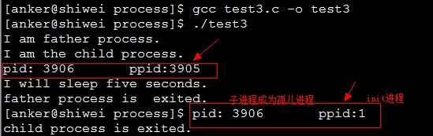
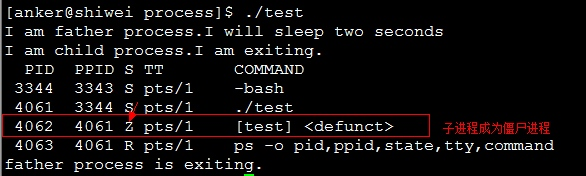
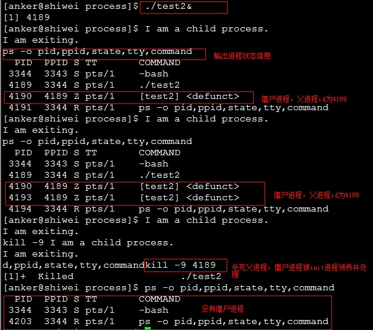
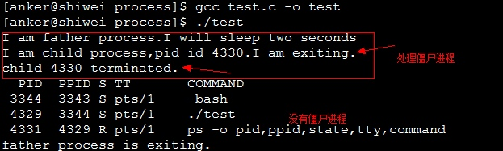
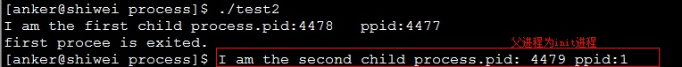

僵尸进程和孤儿进程
之前写了进程的创建，由于是半年前做的题目了，现在回忆有点生疏，有些概念都忘了，比如僵尸进程、孤儿进程、子进程和父进程的关系。。。在博客园看到有一篇讲的很好的关于僵尸进程和孤儿进程的文章，没看到有转载的选项，直接复制过来了，方便以后忘了再查看
转自http://www.cnblogs.com/Anker/p/3271773.html
1.前言
之前在看《unix环境高级编程》第八章进程时候，提到孤儿进程和僵尸进程，一直对这两个概念比较模糊。今天被人问到什么是孤儿进程和僵尸进程，会带来什么问题，怎么解决，我只停留在概念上面，没有深入，倍感惭愧。晚上回来google了一下，再次参考APUE，认真总结一下，加深理解。
2.基本概念
我们知道在unix/linux中，正常情况下，子进程是通过父进程创建的，子进程在创建新的进程。子进程的结束和父进程的运行是一个异步过程,即父进程永远无法预测子进程 到底什么时候结束。 当一个 进程完成它的工作终止之后，它的父进程需要调用wait()或者waitpid()系统调用取得子进程的终止状态。
孤儿进程：一个父进程退出，而它的一个或多个子进程还在运行，那么那些子进程将成为孤儿进程。孤儿进程将被init进程(进程号为1)所收养，并由init进程对它们完成状态收集工作。
僵尸进程：一个进程使用fork创建子进程，如果子进程退出，而父进程并没有调用wait或waitpid获取子进程的状态信息，那么子进程的进程描述符仍然保存在系统中。这种进程称之为僵死进程。
3.问题及危害
unix提供了一种机制可以保证只要父进程想知道子进程结束时的状态信息， 就可以得到。这种机制就是: 在每个进程退出的时候,内核释放该进程所有的资源,包括打开的文件,占用的内存等。 但是仍然为其保留一定的信息(包括进程号the process ID,退出状态the termination status of the process,运行时间the amount of CPU time taken by the process等)。直到父进程通过wait / waitpid来取时才释放。 但这样就导致了问题，如果进程不调用wait / waitpid的话， 那么保留的那段信息就不会释放，其进程号就会一直被占用，但是系统所能使用的进程号是有限的，如果大量的产生僵死进程，将因为没有可用的进程号而导致系统不能产生新的进程. 此即为僵尸进程的危害，应当避免。
孤儿进程是没有父进程的进程，孤儿进程这个重任就落到了init进程身上，init进程就好像是一个民政局，专门负责处理孤儿进程的善后工作。每当出现一个孤儿进程的时候，内核就把孤 儿进程的父进程设置为init，而init进程会循环地wait()它的已经退出的子进程。这样，当一个孤儿进程凄凉地结束了其生命周期的时候，init进程就会代表党和政府出面处理它的一切善后工作。因此孤儿进程并不会有什么危害。
任何一个子进程(init除外)在exit()之后，并非马上就消失掉，而是留下一个称为僵尸进程(Zombie)的数据结构，等待父进程处理。这是每个 子进程在结束时都要经过的阶段。如果子进程在exit()之后，父进程没有来得及处理，这时用ps命令就能看到子进程的状态是“Z”。如果父进程能及时 处理，可能用ps命令就来不及看到子进程的僵尸状态，但这并不等于子进程不经过僵尸状态。 如果父进程在子进程结束之前退出，则子进程将由init接管。init将会以父进程的身份对僵尸状态的子进程进行处理。
僵尸进程危害场景：
例如有个进程，它定期的产 生一个子进程，这个子进程需要做的事情很少，做完它该做的事情之后就退出了，因此这个子进程的生命周期很短，但是，父进程只管生成新的子进程，至于子进程 退出之后的事情，则一概不闻不问，这样，系统运行上一段时间之后，系统中就会存在很多的僵死进程，倘若用ps命令查看的话，就会看到很多状态为Z的进程。 严格地来说，僵死进程并不是问题的根源，罪魁祸首是产生出大量僵死进程的那个父进程。因此，当我们寻求如何消灭系统中大量的僵死进程时，答案就是把产生大 量僵死进程的那个元凶枪毙掉（也就是通过kill发送SIGTERM或者SIGKILL信号啦）。枪毙了元凶进程之后，它产生的僵死进程就变成了孤儿进 程，这些孤儿进程会被init进程接管，init进程会wait()这些孤儿进程，释放它们占用的系统进程表中的资源，这样，这些已经僵死的孤儿进程 就能瞑目而去了。
4.孤儿进程和僵尸进程测试
孤儿进程测试程序如下所示：
#include <stdio.h> #include <stdlib.h> #include <errno.h> #include <unistd.h> int main(){ pid_t pid; //创建一个进程 pid = fork(); //创建失败 if (pid < 0){ perror("fork error:"); exit(1); } //子进程 if (pid == 0){ printf("I am the child process.\n"); //输出进程ID和父进程ID printf("pid: %d\tppid:%d\n",getpid(),getppid()); printf("I will sleep five seconds.\n"); //睡眠5s，保证父进程先退出 sleep(5); printf("pid: %d\tppid:%d\n",getpid(),getppid()); printf("child process is exited.\n"); }else{ //父进程 printf("I am father process.\n"); //父进程睡眠1s，保证子进程输出进程id sleep(1); printf("father process is exited.\n"); } return 0; }
测试结果如下：

僵尸进程测试程序如下所示：
#include <stdio.h> #include <unistd.h> #include <errno.h> #include <stdlib.h> int main(){ pid_t pid; pid = fork(); if (pid < 0){ perror("fork error:"); exit(1); } else if (pid == 0){ printf("I am child process.I am exiting.\n"); exit(0); } printf("I am father process.I will sleep two seconds\n"); //等待子进程先退出 sleep(2); //输出进程信息 system("ps -o pid,ppid,state,tty,command"); printf("father process is exiting.\n"); return 0; }
测试结果如下所示：

僵尸进程测试2：父进程循环创建子进程，子进程退出，造成多个僵尸进程，程序如下所示：
#include <stdio.h> #include <stdlib.h> #include <unistd.h> #include <errno.h> int main(){ pid_t pid; //循环创建子进程 while(1){ pid = fork(); if (pid < 0){ perror("fork error:"); exit(1); } else if (pid == 0){ printf("I am a child process.\nI am exiting.\n"); //子进程退出，成为僵尸进程 exit(0); }else{ //父进程休眠20s继续创建子进程 sleep(20); continue; } } return 0; }
程序测试结果如下所示：

5.僵尸进程解决办法
（1）通过信号机制
子进程退出时向父进程发送SIGCHILD信号，父进程处理SIGCHILD信号。在信号处理函数中调用wait进行处理僵尸进程。测试程序如下所示：
#include <stdio.h> #include <unistd.h> #include <errno.h> #include <stdlib.h> #include <signal.h> static void sig_child(int signo); int main(){ pid_t pid; //创建捕捉子进程退出信号 signal(SIGCHLD,sig_child); pid = fork(); if (pid < 0){ perror("fork error:"); exit(1); }else if (pid == 0){ printf("I am child process,pid id %d.I am exiting.\n",getpid()); exit(0); } printf("I am father process.I will sleep two seconds\n"); //等待子进程先退出 sleep(2); //输出进程信息 system("ps -o pid,ppid,state,tty,command"); printf("father process is exiting.\n"); return 0; } static void sig_child(int signo){ pid_t pid; int stat; //处理僵尸进程 while ((pid = waitpid(-1, &stat, WNOHANG)) >0) printf("child %d terminated.\n", pid); }
测试结果如下所示：

（2）fork两次
《Unix 环境高级编程》8.6节说的非常详细。原理是将子进程成为孤儿进程，从而其的父进程变为init进程，通过init进程可以处理僵尸进程。测试程序如下所示：
#include <stdio.h> #include <stdlib.h> #include <unistd.h> #include <errno.h> int main(){ pid_t pid; //创建第一个子进程 pid = fork(); if (pid < 0){ perror("fork error:"); exit(1); } //第一个子进程 else if (pid == 0){ //子进程再创建子进程 printf("I am the first child process.pid:%d\tppid:%d\n",getpid(),getppid()); pid = fork(); if (pid < 0){ perror("fork error:"); exit(1); } //第一个子进程退出 else if (pid >0){ printf("first procee is exited.\n"); exit(0); } //第二个子进程 //睡眠3s保证第一个子进程退出，这样第二个子进程的父亲就是init进程里 sleep(3); printf("I am the second child process.pid: %d\tppid:%d\n",getpid(),getppid()); exit(0); } //父进程处理第一个子进程退出 if (waitpid(pid, NULL, 0) != pid){ perror("waitepid error:"); exit(1); } exit(0); return 0; }
测试结果如下图所示：
